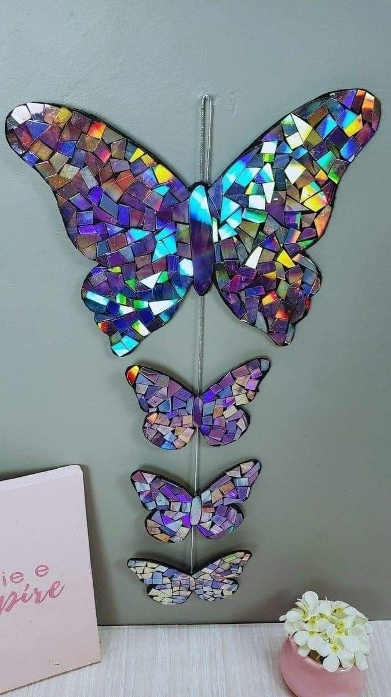

Butterfly Disc Arc

DVD/CD bekas sering dianggap sampah karena sudah jarang digunakan di era digital. Padahal, permukaan DVD yang berwarna pelangi bisa dimanfaatkan untuk membuat kerajinan mozaik. Salah satunya adalah Butterfly Disc Art, yaitu dekorasi berbentu kupu-kupu dari pecahan DVD. Selain mengurangi limbah, kerajinan ini juga memiliki nilai seni dan nilai jual.
Tujuan
- 1. Mengurangi limbah DVD/CD bekas.
- 2. Mengasah kreativitas dalam membuat kerajinan tangan.
- 3. Menghasilkan produk dekorasi yang unik, estetik, dan bernilai ekonomi.
- 4. Menjadi peluang usaha kreatif ramah lingkungan.
Alat
- Gunting / cutter
- Lem tembak / lem kuat
- Pensil & penggaris
- Triplek / karton tebal sebagai alas
- Benang / nilon (untuk gantungan)
Bahan
- DVD/CD bekas
- Vernis / clear coating (opsional, agar mengkilap dan tahan lama)
Langkah kerja
- Buat pola kupu-kupu di karton atau triplek.
- Potong DVD/CD menjadi pecahan kecil seperti mozaik
- Tempel pecahan DVD pada pola kupu-kupu dengan lem.
- Rapikan pinggiran kupu-kupu dengan gunting/cutter.
- Tambahkan benang/nilon bila ingin digantung.
- Semprot dengan vernis agar hasil lebih awet dan berkilau
Harga pembuatan (modal)
- 1.DVD/CD bekas: Rp0 (gratis)
- 2.Lem tembak & stik: Rp10.000
- 3.Triplek/karton: Rp10.000
- 4.Vernis (opsional): Rp10.000
- Total modal per karya ± Rp20.000 – Rp25.000
Harga Jual
- Ukuran kecil: Rp30.000 – Rp50.000
- Ukuran sedang: Rp70.000 – Rp100.000
- Ukuran besar: Rp150.000 – Rp200.000
- Laba (Contoh Perhitungan)
- Jika membuat tas sedang:
- Modal: Rp25.000
- Harga jual: Rp80.000
- Laba: Rp55.000 ( lebih dari200%)
Jadi, Butterfly Disc Art bukan hanya produk seni ramah lingkungan, tapi juga punya potensi usaha dengan keuntungan tinggi.